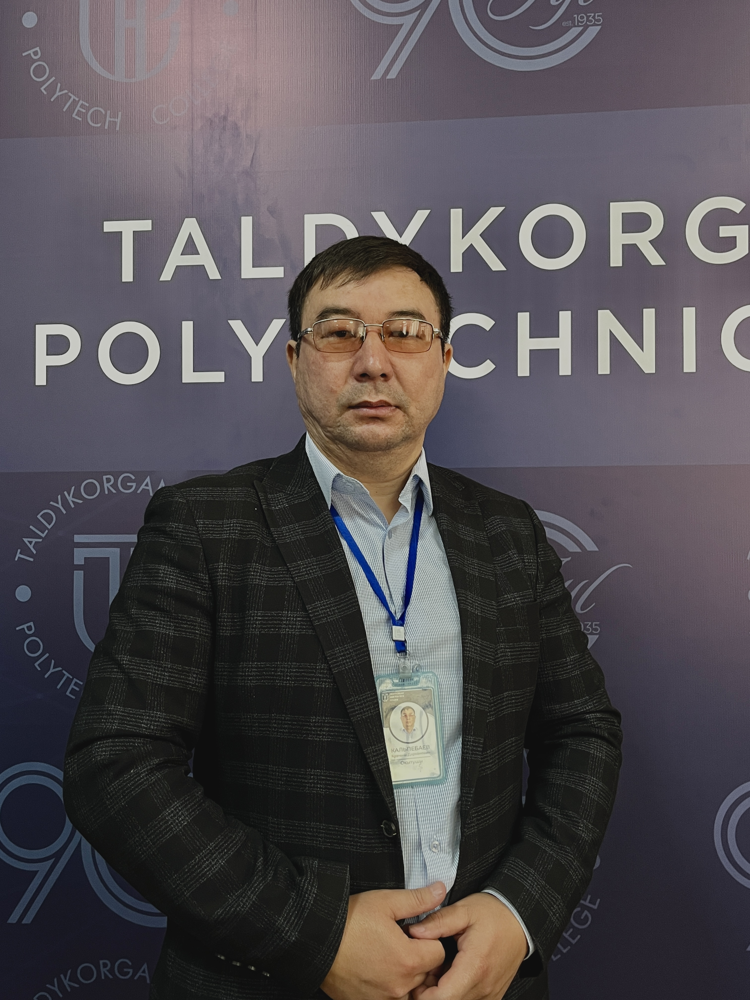

|  | Кальпебаев Қуаныш Дарханович |
| Лауазымы | Арнайы пәндер оқытушысы |
|---|---|
| Бітірген оқу орны | Қ.И.Сәтпаев атындағы Қазақ Ұлттық Техникалық университеті |
| Диплом бойынша білімі | Жоғары, мамандығы: Радиотехника, электроника және телекоммуникация, 2006–2010 жж. |
| Ғылыми дәрежесі, ғылыми атағы | - |
| Біліктілігі және еңбек өтілі | Педагог-модератор, 14 жыл |
| Оқытатын модульдер |
1. IoT құрылғылардың жұмыс істеуін қамтамасыз ету 2. Выполнение монтажа и наладки устройств, блоков и приборов электронной техники 3. Желілік ортаны жобалау 4. Микропроцессорлық және талшықты-оптикалық техниканы монтаждауды орындау 5. Программирование встроенных систем 6. Коммуникациялық жабдық құрылғыларын жөндеу, баптау және реттеу |
| Байланыс ақпараты | kuanysh_kd@mail.ru |
| Қосымша ақпараттар | - |